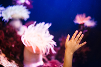

Home » Alumni Weekend » 2013 » Events » Marine Lab Tours

Seymour Marine Discovery Center Tours
Friday, April 26, Saturday, April 27, and Sunday, April 28 at 1, 2, and 3 p.m., Seymour Marine Discovery Center at Long Marine Lab
Family tours depart Friday, April 26, and Saturday, April 27, at 11 a.m., and Sunday, April 28, at 12:30 p.m.
The Seymour Marine Discovery Center is the seaside learning center associated with UC Santa Cruz that brings the adventures and explorations of ocean science to life. Part of UCSC's Long Marine Laboratory, the Center offers hands-on immersion into the world of ocean exploration.
We invite you to visit the Seymour Marine Discovery Center and take a tour that includes parts of the marine lab itself. While on tour, you will see and learn about some of the incredible marine mammals residing at Long Marine Lab, and learn how ongoing research at the lab helps conservation efforts for animals in the wild. Marvel at the enormous "Ms. Blue"—at 87 feet long, she's one of the world's largest whale skeletons. Discover how the largest animal on the planet depends on an unlikely food source, and find out what scientists have learned about blue whales in our oceans.
Before or after your tour, you are invited to explore our interactive exhibits, aquaria, and intertidal and shark touch pools to learn what it's like to be a scientist.
45-minute lab-wide tours depart Friday, Saturday, and Sunday at 1, 2, and 3 p.m. Family tours depart Friday and Saturday at 11 a.m, and Sunday at 12:30 p.m. (The family tour is a 30-minute guided exploration for younger visitors or those with limited time.)
A limited number of tours are offered each day. Participant numbers per tour are limited. Tours are filled on a first-come, first-served basis. Sign-up begins one hour before tour time (half-hour before, for Sunday 12:30 tour).
*It can be cold and windy at the Seymour Center so don't forget to bring layers!
We are located at 100 Shaffer Road, at the end of Delaware Avenue—just a five-minute drive from the base of campus.
General Admission (tour is free with admission):
Adult $6
Student or senior (64+) $4
Child (4-16) $4
Members visit free every day!
UCSC undergraduates with valid ID—free
If you have any questions, please call (831) 459-3800 or visit our website.
- Home
- Schedule of events
- Places to stay
- Parking and shuttles
- Share your photos
- Invite your friends
- Join Facebook group
- Volunteer opportunities
- Campus activities

Special Events Office
Email: specialevents@ucsc.edu
Phone: (831) 459-5003